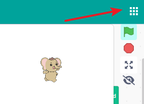
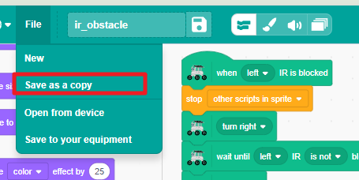
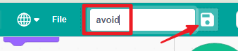
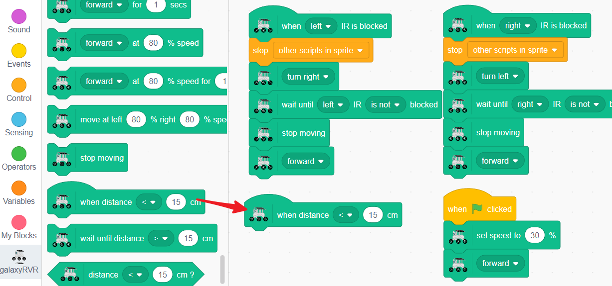
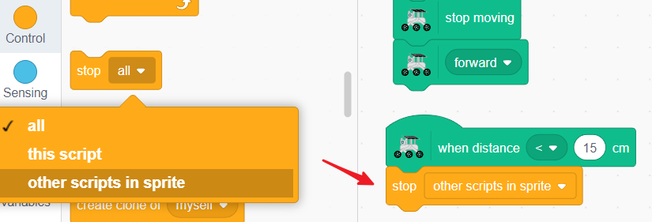
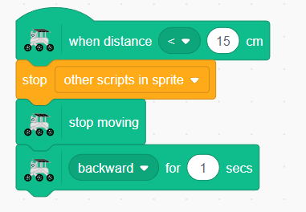
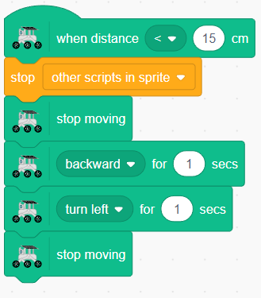
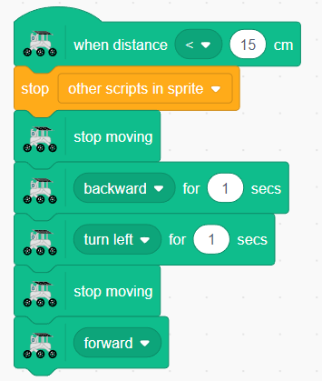

Note
Hello, welcome to the SunFounder Raspberry Pi & Arduino & ESP32 Enthusiasts Community on Facebook! Dive deeper into Raspberry Pi, Arduino, and ESP32 with fellow enthusiasts.
Why Join?
Expert Support: Solve post-sale issues and technical challenges with help from our community and team.
Learn & Share: Exchange tips and tutorials to enhance your skills.
Exclusive Previews: Get early access to new product announcements and sneak peeks.
Special Discounts: Enjoy exclusive discounts on our newest products.
Festive Promotions and Giveaways: Take part in giveaways and holiday promotions.
👉 Ready to explore and create with us? Click [here] and join today!
Lesson 8 Advanced Obstacle Avoidance
Have you ever wondered how robots can navigate through rooms without bumping into furniture? Today, we’re going to teach our Mars Rover to do just that! We’ll combine two different types of sensors to create a super-smart obstacle avoidance system.
How Sensors Help Robots “See”
Let’s think about how we use our senses:
Infrared Sensors work like bats using echolocation! They send out invisible infrared light and listen for it to bounce back from objects. If the light returns quickly, there’s an obstacle nearby.
Ultrasonic Sensors work with sound waves we can’t hear. They send out high-frequency sound and measure how long it takes to echo back. Longer time means the object is farther away.
When we use both sensors together, our Rover gets a much better understanding of its surroundings - just like using both your eyes and ears to navigate a dark room!
Learning Objectives
Combine ultrasonic and infrared sensors to create an advanced obstacle avoidance system
Program your Mars Rover to automatically sense and navigate around obstacles
Building Our Super-Smart Rover
Remember the obstacle avoidance program we created earlier? We’re going to use that as our starting point and make it even better!
First, Connecting the APP to GalaxyRVR.
Now, let’s open our previous infrared sensor project from Lesson 6 IR Obstacle as a template. Click on “File” and find your saved IR obstacle avoidance project.

Before we make changes, let’s save a copy so we don’t lose our original work. Click “Save as a copy.”

Give your new project a cool name like “Super Smart Rover” or “Advanced Obstacle Avoidance.”

Now let’s add our ultrasonic sensor! Drag out the
when distance < 15 cmblock. This will be our “early warning system” that detects obstacles from farther away.
To prevent confusion, we’ll add a
stop other scripts in spriteblock. This ensures our Rover only follows one set of instructions at a time.
When the ultrasonic sensor detects something close, we want our Rover to back up to a safe distance.

Now we need to turn away from the obstacle. The Rover will turn for one second - you can choose left or right turn!

Finally, we tell the Rover to continue moving forward on its new path.

{kind=link}
Amazing! Now you have a Rover that uses three sensors working together like a team:
The front ultrasonic sensor spots distant obstacles
The left IR sensor detects objects on the left side
The right IR sensor watches the right side
Test your program and watch how smoothly your Rover navigates around obstacles. Try creating an obstacle course and see if your Rover can complete it without any crashes!
Challenge: Can you modify the turning time or distance to make your Rover even better at avoiding obstacles?